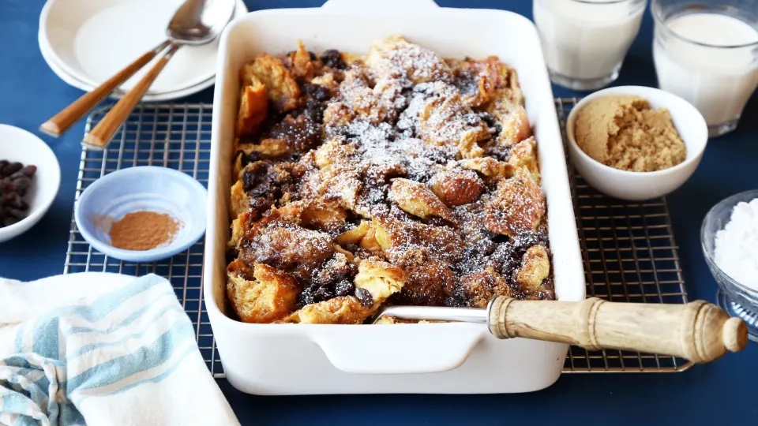

Soft and pillowy bread pudding that will keep you up for weeks!
Savor the irresistible allure of bread pudding paired with a tantalizing brandy vanilla sauce. Perfect for a weekend family dinner!
Ingredients
- 1/2 cup raisins
- 1/2 cup brandy
- 1/4 cup butter
- 8-10 slices dry bread
- 1 cup packed brown sugar
- 1 tsp cinnamon
- 1/4 tsp allspice
- 3 eggs
- 1/4 tsp salt
- 1 tsp vanilla
- 3 cups milk, scald & cooled
Steps
- Cover raisins with brandy or water.
- Set aside.
- Melt butter or margarine.
- Break up bread. Set aside.
- Combine brown sugar, cinnamon, allspice.
- Reserve 3 tablespoons of this mixture for topping.
- Pour melted margarine on before you toss the bread crumbs. Your sugar mixture will stick better that way.
- Toss bread with remaining sugar mixture.
- Place 1/2 of bread mixture in a lightly greased 1 1/2 quart baking dish.
- Drain raisins, place 1/2 raisins over bread crumbs.
- Repeat layers.
- Combine egg, salt, and vanilla in a bowl.
- Beat for 1 minute.
- Add milk slowly.
- Pour over mix in dish.
- Let stand for 5 minutes.
- Sprinkle reserved sugar mix on top.
- Bake at 325F for 45 to 50 minutes.